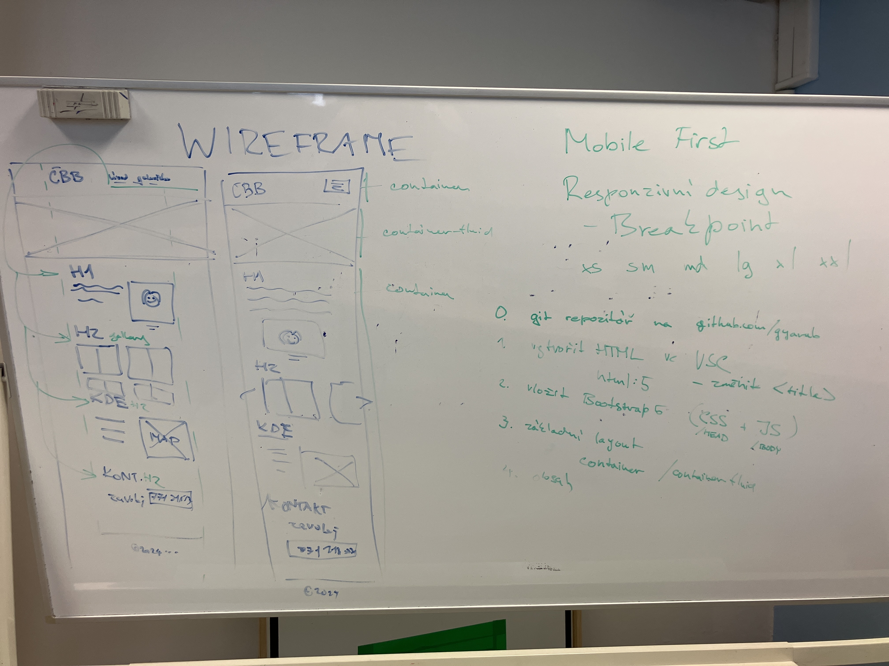

WA-hodina 5. 1.

Shrnutí
- na hodině jsme probírali WIREFRAME
- vysvětlili jsme si proč je důležité vztvářet webovou aplikaci pro mobil
- naučilil jsme se jak využít
class=container - breakpoints
xs,sm,md,lg,xl,xxl - příprava na písemku - např. změnit
<title>